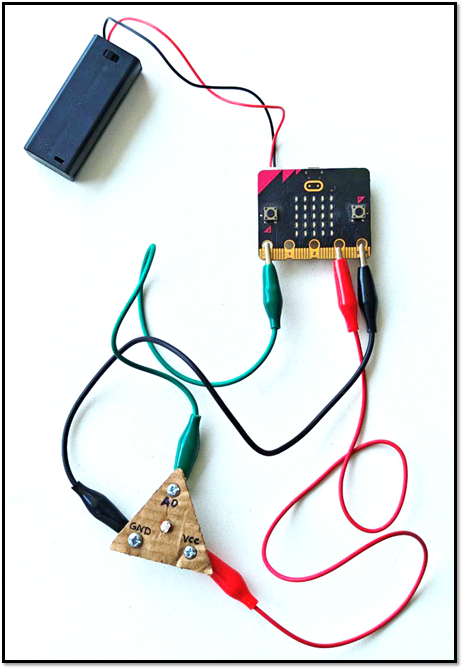
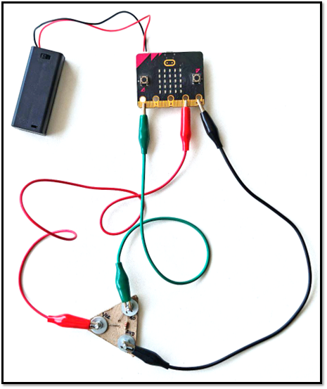
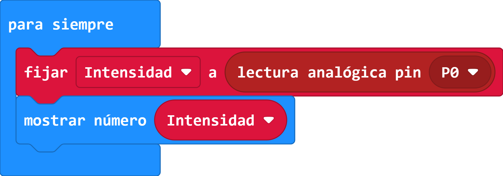

Como ya tienes armado tu módulo para el sensor de luz, realiza las conexiones con tu microbit tal como aparece en las siguientes imágenes inferiores. Las conexiones entre el microbit y el módulo del sensor de luz son:
- Pin 0 del microbit conectado con el terminal A0 del módulo sensor de luz.
- Pin 3V del microbit conectado con terminal VCC del módulo sensor de luz.
- Pin GND del microbit conectado con terminal GND del módulo sensor de luz.
 
Luego abre y codifica en el programa en Makecode lo que aparece en la imagen inferior, y una vez que lo termines, lo subas al microbit y pruebes el funcionamiento de tu módulo. Debes probarlo tapándolo y debe dar un valor bajo ( cercano a cero) y luego exponerlo a luz (debe dar un mayor valor).
